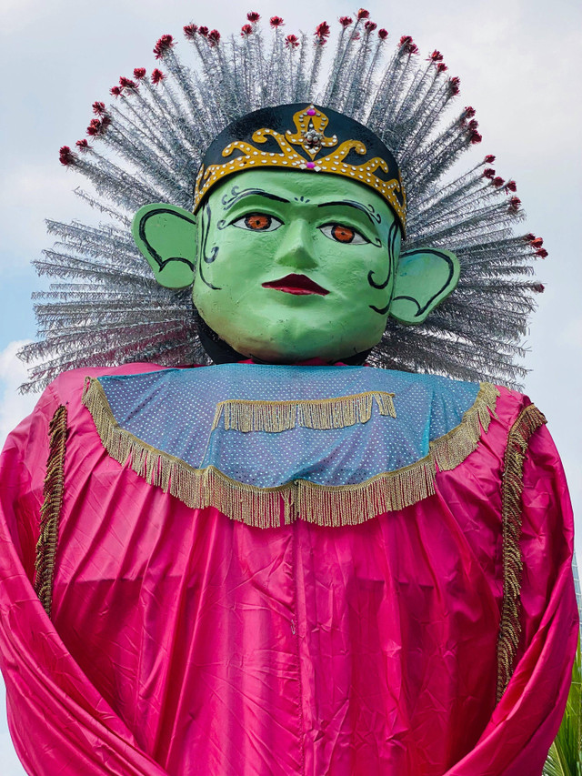

JLetak dan Kondisi Geografis Topografi"
Jakarta
Dialek Jakarta: Fenomena Bahasa Ibu Kota yang Merambah Nusantara
Tanpa kita sadari, dialek Jakarta (= bahasa Betawi) ternyata sering menyusup ke dalam karya para penulis kita. Perhatikanlah contoh-contoh berikut :
Pramoedya Ananta Toer - Meskipun dikenal dengan karya-karyanya dalam bahasa Indonesia, Pramoedya juga sempat menggunakan bahasa Betawi dalam dialog karakter-karakternya untuk menunjukkan latar belakang sosial budaya yang berbeda.
Gus tf Sakai - Penulis dan budayawan Betawi yang dikenal dengan karya-karyanya yang mengangkat kearifan lokal Betawi dalam bahasa sehari-hari.
Pitoyo Amrih - Penulis yang sering menggunakan bahasa Betawi dalam novel dan cerpennya untuk menciptakan suasana dan karakter yang autentik.
Dialek Jakarta, atau bahasa Betawi, adalah bagian penting dari budaya dan komunikasi di Indonesia, yang digunakan oleh masyarakat di berbagai daerah, membuatnya menjadi fenomena yang sangat menarik.
Sejarah dan Perkembangan Dialek Jakarta, Dialek Jakarta memiliki sejarah yang panjang dan kompleks. Dialek ini berasal dari bahasa Melayu yang digunakan oleh penduduk asli Jakarta, yang kemudian dipengaruhi oleh berbagai budaya dan bahasa lain yang datang ke kota tersebut.
Dialek Jakarta telah berkembang menjadi bahasa yang unik dan kaya, dengan penggunaan kata-kata dan frasa yang khas, seperti "ngge ade matinye" yang berarti "saya tidak tahu" dalam bahasa Betawi.
Penggunaan Dialek Jakarta di Luar Jakarta Dialek Jakarta tidak hanya digunakan di Jakarta tetapi juga di daerah lain di Indonesia. Masyarakat dari berbagai daerah, termasuk Sunda, Jawa, Minang, dan lain-lain, telah menggunakan dialek Jakarta dalam berkomunikasi. Hal ini disebabkan oleh perkembangan teknologi dan media massa.
Pengaruh Dialek Jakarta pada Bahasa Indonesia Dialek Jakarta berdampak signifikan pada bahasa Indonesia dan telah menjadi bagian dari ragam tak resmi, baik dalam tulisan maupun lisan, serta memengaruhi perkembangan bahasa Indonesia.
Krisis Bahasa Daerah di Jakarta Namun, terdapat juga krisis bahasa daerah di Jakarta. Dengan adanya migrasi penduduk dari berbagai daerah ke Jakarta, bahasa daerah masing-masing penduduk telah mengalami penurunan penggunaan. Hal ini disebabkan oleh dominasi bahasa Indonesia dan penggunaan dialek Jakarta yang lebih luas.
Pentingnya Dialek Jakarta Dialek Jakarta memiliki nilai budaya yang sangat penting. Dialek ini telah menjadi bagian dari jati diri masyarakat Betawi dan telah mempengaruhi perkembangan budaya dan komunikasi di Indonesia. Oleh karena itu, penting untuk menjaga dan menghargai dialek Jakarta sebagai bagian dari budaya Indonesia.
Referensi "Dialek Jakarta". Kompas.id. 12 Desember 2022. "Dialek Jakarta 'Ngge Ade Matinye'". Antaranews.com. 2009. "Krisis Bahasa Daerah di Jakarta". Kumparan.com. 27 Oktober 2021. "Perkembangan Bahasa Indonesia sebagai Bahasa Kedua". UPI. 2009. "Bahasa Ibu sebagai Pilar Jati Diri Bangsa yang Majemuk". Eprints.uty.ac.id. 2007.